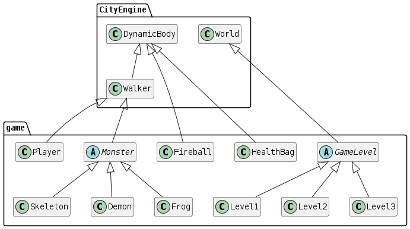

The Dungeon: 2D Java Game
Why did I make this?
For my undergraduate first-year Java programming module, the coursework required me to develop a game using Java. I had made a small game in Scratch as part of a school project in 2016 and always intended to translate it into a text-based programming language. Also, having finished my previous project using Processing, moving on to a multi-class project in actual Java felt like the next logical step.
What resources/knowledge did I have?
Most of my previous programming experience had been in Python. Although I had played around with the Tkinter library, the bulk of these Python projects were short TUI programs. However, this helped me with picking up Java quickly during the module as the underlying concepts remained the same.
At this point, I had also been given hands-on tutorials with using the CityEngine wrapper library for JBox2D, provided by my university. This external library served as a physics engine that students could use in the coursework. Along with this, we were provided with a documentation guide to consult whilst working with the library.
To define the scope of the project, we were given a coursework brief which listed all the requirements expected at each of the three milestones. This would influence my general work plan. Finally, as Java projects are best developed with proprietary IDEs, I was given an educational license for IntelliJ IDEA. The features of which I was introduced to during the module tutorials.
How did I develop it?
I used a minimal working example with the physics engine as a starting point. Working closely with the CityEngine documentation, I extended existing classes to represent different monsters, items, and levels. Some game textures were reused from my original Scratch project. GUI elements were created using the Swing library, which was particularly challenging for me as I struggled with IntelliJ's integrated GUI builder. Instead, I opted to write the GUI components directly in code. I also implemented text file handling for persistent storage of high scores.
{kind=link}
Enemy AI was implemented using an internal state machine for each class instance. The physics engine operated in steps. By using its StepListener class, I could evaluate conditions at each step to determine what actions an enemy should take. Conditions included the enemy's distance to the player or whether it had recently taken damage. For non-physics-based interactions like shield blocking, I created invisible static objects to act as sensors.
The development of this project occurred in two phases. Initially, I created a basic version focusing on meeting the specified requirements. No version control was used in this phase. However, I eventually dumped the project files into a GitHub repository once the module had finished.
In the second phase, I focused on improving the game during the summer. This involved adding a new level and monster type, better enemy pathfinding, and a title screen. During this phase, I used Git to track my progress and manage changes across my laptop and PC. This was my first experience using Git so extensively.
Outcome
The game has three levels, each with a unique monster type. To progress to the next level, the player must reach a specific score threshold. Once the third level is complete, a winning screen is presented allowing the player to return to the title screen menu.
All the source code files are grouped into a single package called "game". Looking back, I would've preferred to split entity, GUI, and level classes into separate packages. While the game's implementation is working, there's a lot to be optimized as the project lacked a formal design phase. Understanding the full relationships between classes would have been helpful during debugging. Towards the end, I heavily relied on adding global variables which violated encapsulation principles within my codebase. Along with these hacky solutions, cohesion progressively lowered as unplanned dependencies formed between classes. This could have been avoided by creating a class diagram at an earlier stage, showing me where refactoring would've been most appropriate.
{kind=link}
Working with the documentation was a central theme. However, overlooking specific features, such as improper use of image attachments and running unnecessary physics calculations with the state machine, led to noticeable lag in the game's third level. Similarly, my inexperience with file path configurations and proper resource management led to issues when exporting the game as a .jar file. As a result, the game is best run when executed through the IntelliJ IDE.

In conclusion, this project taught me a lot about object-oriented programming and Java. I gained skills in building interfaces with Swing and began using Git for version control. I gained an appreciation for planning and designing large projects to help easily maintain and add to a larger codebase.
The full source code for this project is available on GitHub.